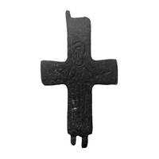

Catalog › CE-0283 · KIR2023-14
Valvă de encolpion de bronz cu figură orantă, cat. 14, Muzeul Kırklareli
sec. X–XII (901–1200) · loc necunoscut · Muzeul Kırklareli (Kırklareli Müzesi), Turcia, inv. 202
single valve of a reliquary cross, bronz; c. X–XII (901–1200); find spot unknown; kept at Muzeul Kırklareli (Kırklareli Müzesi), Turcia.


Identificare
- Categorie
- Valvă izolată
- Material
- Bronz
- Tehnică
- Gravare (incizie)
- Stare
- Fragmentară
- Dimensiuni
- Î 66 × L 37 mm
Iconografie
- Avers
- Neidentificat
- Descriere avers
- Figură orantă incizată, cu fața ovală din linii drepte și nimb distinct, cu trăsături stilizate; veșmântul, nefinisat, formează un model de romburi în șir; brațele sunt scurte, mâinile și degetele abia se disting. Autorul spune că identitatea figurii nu a putut fi stabilită; probabil Maica Domnului sau un sfânt.
- Limba
- Fără inscripție
Datare și atribuire
- Datare
- sec. X–XII (901–1200)
- Tipologie
- Pitarakis 2006, tip IV
Descoperire
- Context
- Colecție (fără context)
- Coordonate
- 41.7351° N, 27.2252° E
- Precizia locului
- Loc de păstrare (loc de descoperire incert)
Păstrare și referințe
- Colecție
- Muzeul Kırklareli (Kırklareli Müzesi), Turcia
- Nr. inventar
- 202
- Bibliografie
- S. Uygun Yazıcı, Kırklareli Müzesi Bizans Dönemi Madeni Haçları, în „Art-Sanat”, 20, 2023, p. 613–640 [Uygun Yazıcı 2023], p. 628, cat. nr. 14, reprodusă la G. 14 (p. 628). DOI: 10.26650/artsanat.2023.20.1290437
- Figura
- G. 14
- Planșe
- Uygun Yazıcı 2023, p. 628
- Analogii
- Muzeul Național Varna (Pitarakis 2006, cat. 290, p. 276), după Uygun Yazıcı 2023
- Observații
- Figura nu are inscripție. S-a păstrat numai fața. Intrat în muzeu prin cumpărare; sursa spune că toate piesele provin din Kırklareli și districtele din jur, fără loc precis de descoperire. Locul descoperirii nu e cunoscut cu precizie; punctul de pe hartă marchează locul de păstrare (Muzeul Kırklareli), nu locul descoperirii. Coordonate: nu sunt date în sursă.
Citare: Corpus Encolpiorum, CE-0283, Valvă de encolpion de bronz cu figură orantă, cat. 14, Muzeul Kırklareli, https://vitaliejosanu1979-ux.github.io/primul-meu-proiect/piese/KIR2023-14/ (accesat 2026-10-17).